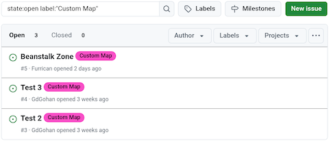
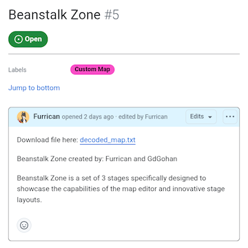
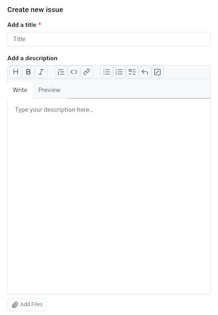
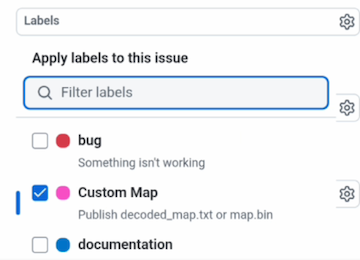

This is the page where you can follow instructions on how to use the GitHub Repository and how to publish your own game maps.
If you encounter problems in the GitHub Repository, some of your answers can be found in the Q&A Page.

This is the page where you can follow instructions on how to use the GitHub Repository and how to publish your own game maps.
If you encounter problems in the GitHub Repository, some of your answers can be found in the Q&A Page.

DESCRIPTION:
When selecting the Online Stages, you will enter in the custom map GitHub repository.
This is where you can find all published game maps.
Each game map is located in pages known as "issues". These issues have the Custom Map label next to their title.
SEARCH FUNCTIONS:
If you want to search for a specific issue, you can use the search bar on top of the issues list.
By default, the Custom Map label is used in the search bar, but you can remove it to look into all other issues. Removing the Custom Map label can be useful in case you want to find game maps inside issues that don't use this label.
You can also search the issues by authors by using the Authors tab.
If you want to play a game map, you need to download a game map.
The steps to download and play a game map are as followed:

PUBLISHING YOUR MAP:
If you want to publish your map in the Online Stages page, you need create a new issue in the GitHub repository.
The steps to publish your map are as followed:

